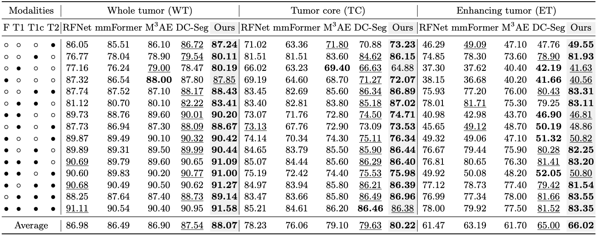
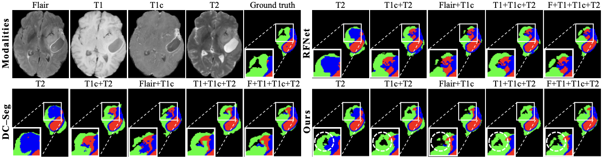
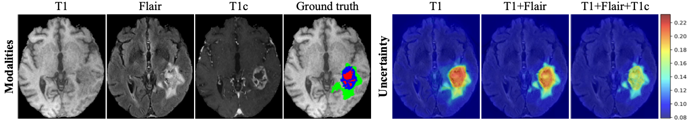
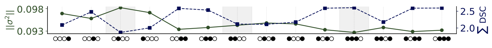
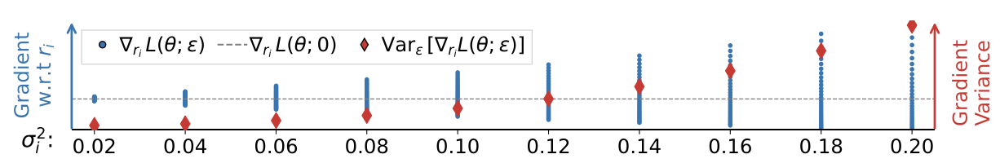

Tables: Dice similarity coefficient (DSC, %) on BraTS 2020 and BraTS 2018, together with an ablation study on BraTS 2020. The proposed method achieves the best average performance across whole tumor (WT), tumor core (TC), and enhancing tumor (ET) regions, and the ablation confirms the complementary benefit of uncertainty-aware alignment and uncertainty ordering.

Figures: Qualitative results on BraTS 2020 show that our model produces more accurate and consistent segmentations than RFNet and DC-Seg under different modality configurations. The uncertainty visualization shows high uncertainty within tumor regions when evidence is limited, which decreases as complementary modalities are incorporated.

Fig. 3. Visualization of input modalities and ground-truth mask, with trained uncertainty overlaid on T1. Uncertainty, initially higher within tumor regions, decreases as additional modalities are incorporated. (Sample: HG_BraTS20_Training_045)

Fig. 4. Variance magnitude (—) and summed test DSC across tumor subregions (---) for each modality configuration on BraTS 2020. • and ○ indicate observed and missing modalities (Flair, T1, T1c, T2). Higher uncertainty correlates with lower performance. The shaded regions highlight that a superset exhibits lower uncertainty than its subset.

Fig. 5. Effect of variance magnitude on gradient behavior under controlled scaling.
We address intrinsic uncertainty induced by missing MRI modalities through a probabilistic framework for incomplete multimodal brain tumor segmentation. By reducing reliance on unsupported cues and explicitly organizing uncertainty across modality subsets, the model yields more reliable predictions. Experiments on BraTS 2018 and BraTS 2020 demonstrate robustness across missing-modality scenarios, while theoretical and empirical analyses support the need for uncertainty modeling.
@inproceedings{baek2026setinclusive,
title={Set-Inclusive Uncertainty Modeling for Robust Brain Tumor Segmentation},
author={Baek, Seunghun and Park, Jihwan and Sim, Jaeyoon and Lee, Hoseok and Lee, Seungjoo and Kim, Won Hwa},
booktitle={International Conference on Medical Image Computing and Computer-Assisted Intervention},
year={2026}
}